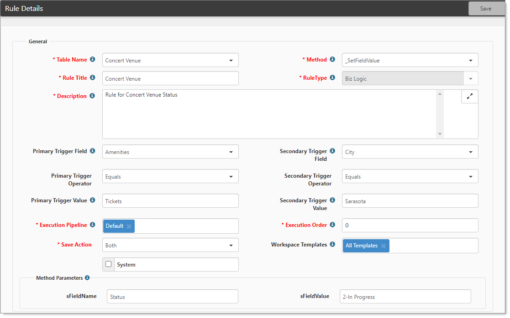

The Custom Logic Rules dashboard opens.
The Rule Details form opens.
Dataform rules can trigger events, ensure that data does not become corrupt (no duplicate SSN and FEIN), and manage the requirements of a workflow, along with any number of custom functions.
You can configure rules to auto-populate another field when a value is selected. For example, let’s say that you select a Primary trigger field and a Secondary trigger field. If the values match, you can set a destination value. You have choices for operator and trigger value datatypes. For example, you can create a rule when you want to set the Implementation Specialist to X when the Payroll Specialist is Y.
To configure a rule:

| Table Name | This is the dataform where this rule will execute when the dataform is saved. |
| Method | Select a method. Is this rule for a field, calendar event, a date value, etc? Our example shows _SetFieldValue. |
| Rule Title | Provide an abbreviated explanation of what this rule does, for example, "Set Implementation Specialist for Green Team". |
| Rule Type | |
| Description | Provide a more thorough explanation of what this rule is to accomplish. |
| Primary Trigger Field |
Select the field that is going to cause the change. This field is a lookup of all the fields on the form. |
| Secondary Trigger Field | Select an additional trigger condition that must be met if necessary. This field is a lookup of all the fields on the form. |
|
Primary Trigger Operator Secondary Trigger Operator |
Select the operator datatype. The following operators apply to their respective datatypes:
|
| Primary Trigger Value Secondary Trigger Value |
Type a value to be met as a triggering condition. The following list is the standard behavior of the value field based on datatype:
Other valid values include:
|
| Execution Pipeline | Leave this set to Default. |
| Execution Order |
This field controls the order in which rules will execute. Rules execute from the lowest to the highest number. It may be necessary to look at other rules already configured on this dataform to determine the order of precedence for executing rules. Execution Order of Precedence: Within the Rules system, there is a distinct order of precedence that occurs, that being HardError, SoftError, BizLogic. This means that setting a field to a specific value automatically with BizLogic, then validating that field with a Hard Error will never occur in the correct order, as the Hard Error will fire before the BizLogic fills the field. This order of precedence happens irrespective of the execution order placed on the configured rule, so Hard Errors will fire in Execution Order least to greatest, then Soft Errors will fire in their order of execution, then the Biz Logic will happen, again in the order of execution set on each rule. |
| Save Action | Will this rule be applied on Insert of a new dataform, the Update of an existing dataform, or on Both? |
|
Workspace Templates |
Select the templates under which this rule will run. |
|
System |
|
|
Method Parameters |
Method Parameters are dependent on the selected rule method for this rule. Hover over the info bubble for more parameter information or submit an Extranet case with your questions. |
| Workspace Template | Select the Workspace Template to which this rule applies. |
To find the technical database names and the values stored in the database representing the value on the dataform, use a combination of Ad-hoc Reports, the Dataform Specifications Report, Lookup Admin, or Dataform Admin.
If you need further help with configuring custom rules in your system, please log a case in the Extranet.